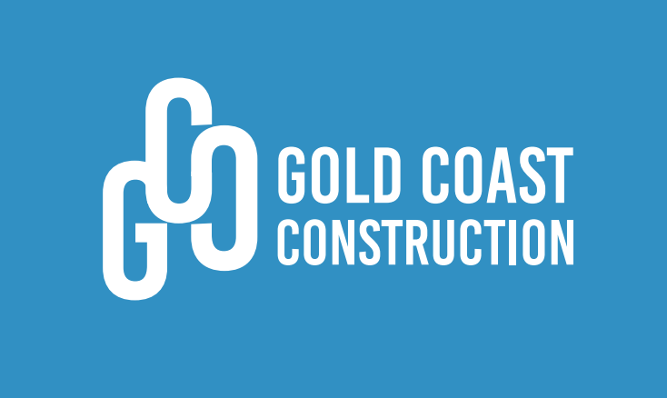

Vítejte na oficiální webové stránce Gold Coast Company – vašeho spolehlivého partnera v oblasti projektového managementu, požární ochrany, inženýringu, dozoru staveb a poradenství. Jsme dynamická a inovativní firma, která se specializuje na poskytování komplexních řešení pro širokou škálu projektů, od malých soukromých staveb až po velké komerční a průmyslové objekty.
S více než desetiletou zkušeností a vášní pro excelenci ve službách, jsme se stali osvědčeným dodavatelem v našem oboru. Náš oddaný tým odborníků je připraven splnit vaše nejnáročnější požadavky a přinést vašim projektům inovativní a efektivní řešení.
Přejeme vám příjemné prozkoumávání naší stránky a těšíme se na možnost spolupráce s vámi při realizaci vašich budoucích projektů.
Naše služby se vyznačují kombinací technické odbornosti, inovativních přístupů a důkladného porozumění potřebám našich klientů. Díky našemu závazku ke kvalitě a spolehlivosti můžete mít jistotu, že váš projekt bude realizován s maximální péčí a profesionálním přístupem.
Jsme hrdí na to, že se můžeme pyšnit bohatým portfoliem úspěšně dokončených projektů v oblasti projektového managementu, architektury a inženýrství. Díky našemu důkladnému přístupu, inovativním řešením a nekompromisnímu závazku ke kvalitě můžete mít jistotu, že váš projekt bude realizován s maximální péčí a profesionalitou.
">
Máte-li otázky, zájem o naše služby, nebo jednoduše potřebujete poradit s nějakým projektovým záměrem, neváhejte nás kontaktovat.
Níže naleznete naše kontaktní údaje, včetně telefonního čísla, e-mailové adresy a sídla společnosti. Rádi vám poskytneme veškeré informace, které potřebujete, a domluvíme si osobní konzultaci, pokud to bude nutné. Vaše spokojenost a úspěch vašich projektů jsou pro nás prioritou.
Kontakt
Gold Coast Construction s.r.o.
Krolmusova 491/28
160 00 Praha 6
IČO: 08750645
DIČ: CZ08750645
Identifikátor datové schránky: d4ei25f
E-mail: info@goco.cz
Tel: 603 883 592
Požární ochrana
E-mail: pozar@goco.cz
Tel: 602 449 065